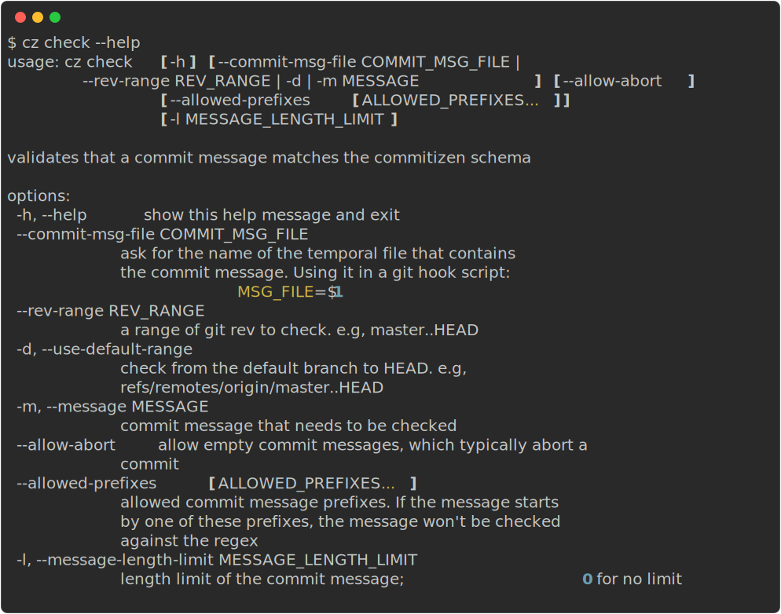

Check¶
About¶
This feature checks whether the commit message follows the given committing rules. And comment in git message will be ignored.
If you want to setup an automatic check before every git commit, please refer to Automatically check message before commit.
Usage¶

There are three mutually exclusive ways to use cz check:
- with
--rev-rangeto check a range of pre-existing commits - with
--messageor by piping the message to it to check a given string - or with
--commit-msg-fileto read the commit message from a file
Git Rev Range¶
If you'd like to check a commit's message after it has already been created, then you can specify the range of commits to check with --rev-range REV_RANGE.
$ cz check --rev-range REV_RANGE
For example, if you'd like to check all commits on a branch, you can use --rev-range master..HEAD. Or, if you'd like to check all commits starting from when you first implemented commit message linting, you can use --rev-range <first_commit_sha>..HEAD.
For more info on how git commit ranges work, you can check the git documentation.
Commit Message¶
There are two ways you can provide your plain message and check it.
Method 1: use -m or --message¶
$ cz check --message MESSAGE
In this option, MESSAGE is the commit message to be checked.
Method 2: use pipe to pipe it to cz check¶
$ echo MESSAGE | cz check
In this option, MESSAGE is piped to cz check and would be checked.
Commit Message File¶
$ cz check --commit-msg-file COMMIT_MSG_FILE
In this option, COMMIT_MSG_FILE is the path of the temporal file that contains the commit message. This argument can be useful when cooperating with git hook, please check Automatically check message before commit for more information about how to use this argument with git hook.
Allow Abort¶
cz check --message MESSAGE --allow-abort
Empty commit messages typically instruct Git to abort a commit, so you can pass --allow-abort to
permit them. Since git commit accepts an --allow-empty-message flag (primarily for wrapper scripts), you may wish to disallow such commits in CI. --allow-abort may be used in conjunction with any of the other options.
Allowed Prefixes¶
If the commit message starts by some specific prefixes, cz check returns True without checkign the regex.
By default, the the following prefixes are allowed: Merge, Revert, Pull Request, fixup! and squash!.
cz check --message MESSAGE --allowed-prefixes 'Merge' 'Revert' 'Custom Prefix'